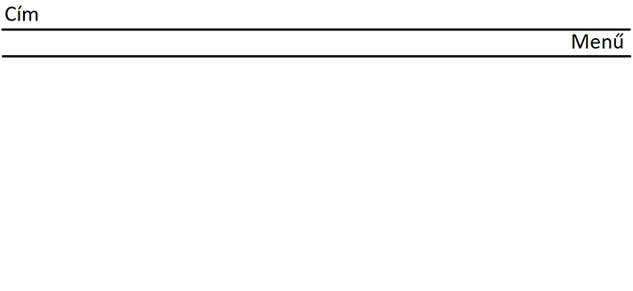

| Rólam | Munkáim | Kapcsolat | Weboldalterv |
|---|
-nehézséget jelentett a különböző színek kiválasztása és össze hangolása
-kódolás terén a táblázat használatánál utköztem nehézségekbe, de valamilyen módon sikerült kiküszöbölni
-igazándiból nem létezett konkrét eredeti ötlet, leginkább a menetközben ihletődtem általam használt honlapok dizájnjából
-az eredeti elképzeléshez képest a menü sáv vátozott meg a látható módon
https://www.w3schools.com/html/
https://www.youtube.com/channel/UCQyut5y2NnWs_OKD35SWdMw/about
https://www.sublimetext.com/
https://ipsum-community.github.io/hodoripsum/
